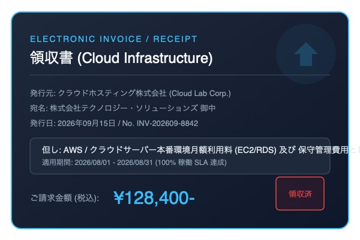

Chrome 組み込みの Prompt API (window.ai) を使用し、文脈と選択肢から最も可能性・妥当性が高い選択肢をブラウザ内で安全・高速に判定します。
ご利用のプロジェクト構成（通常のHTML、または Vite / Next.js / webpack 等のモダンフロントエンド）に合わせて、以下の2種類のいずれかを直接ダウンロードして読み込んでください。
ビルドツール不要。<script src="nano-judgement.global.js"></script> で読み込むだけで、属性ベースの自動判定や window.NanoJudgement が即座に使えるスタンドアロン版です。
モダンな JavaScript 開発用。import { judge } from './nano-judgement.js' で個別の判定関数や初期化メソッドを直接インポートして制御したい場合に最適です。
ブラウザの AI API を確認しています...
data-nano-judgement 属性を持つ入力枠に 5文字以上 入力されると、Language Detector API と Translator API で即座に英語へ事前翻訳・キャッシュされ、裏で自動的に判定が開始されます。
・2秒以内の再更新: 英語に都度翻訳し、先ほどの文章とは別キーで安全にキャッシュ。
・2秒経過後の更新: 最初の文章から 25%以上テキストが変化した場合、進行中の判定を即座に中断して最新の内容で再判定を開始します。
data-nano-judgement (理由なし)
data-judge-reason="true"
data-judge-select="#supportPriority"
data-judge-select="#audioSupportPriority"
data-judge-select="#expenseCategory"

-
NanoJudgement.judge() の第2引数（Context）には、テキスト文字列だけでなく 画像や音声の File / Blob オブジェクトをそのまま直接渡せます。
マイクでの録音作業を行わなくても、既存の音声ファイル（コールセンターの通話録音、留守番電話、ボイスメモなど）をそのままアップロードするだけで、オンデバイス判定が実行されます。
expectedInputs: [{ type: "audio" }, { type: "image" }]）有効環境では、画像・音声のバイナリそのものを直接 Gemini Nano に渡して推論します。includeReason: true（または data-judge-reason="true"）を指定してください。ユーザーが領収書画像（PNG/JPEG/SVG）をドロップまたはファイル選択すると、画像を直接 Gemini Nano へ投入し、勘定科目セレクトボックス（旅費交通費・消耗品費・会議接待費等）を瞬時に自動選択する完全な実装例です。
<!-- 1. HTML: ドロップゾーン ＆ 勘定科目セレクトボックス -->
<div id="dropZone" style="border:2px dashed #38bdf8; padding:2rem; text-align:center; border-radius:12px; cursor:pointer;">
<p>📂 領収書・レシート画像をここにドラッグ＆ドロップ、またはクリックして選択</p>
<input type="file" id="receiptInput" accept="image/*" style="display:none;">
</div>
<select id="accountCategory" style="margin-top:1rem; padding:0.5rem; width:100%;">
<option value="">-- AIが自動判定して選択します --</option>
<option value="travel" data-description="電車・タクシー・新幹線・航空券等の移動交通費">旅費交通費</option>
<option value="supplies" data-description="PC周辺機器・文房具・事務消耗品・コピー用紙">消耗品費</option>
<option value="entertainment" data-description="取引先との会食・カフェでの商談打ち合わせ代">会議接待費</option>
<option value="cloud" data-description="AWS/GCPサーバー利用料・SaaSサブスクリプション">通信開発費</option>
<option value="other" data-description="上記いずれにも当てはまらないその他の経費">その他</option>
</select>
<div id="judgementResult"></div>
<!-- 2. JavaScript ロジック -->
<script type="module">
import { NanoJudgement } from './nano-judgement.js';
const judgement = new NanoJudgement();
const dropZone = document.getElementById('dropZone');
const fileInput = document.getElementById('receiptInput');
const selectEl = document.getElementById('accountCategory');
const resultDiv = document.getElementById('judgementResult');
dropZone.addEventListener('click', () => fileInput.click());
dropZone.addEventListener('dragover', (e) => { e.preventDefault(); dropZone.style.background = 'rgba(56,189,248,0.1)'; });
dropZone.addEventListener('dragleave', () => { dropZone.style.background = 'transparent'; });
dropZone.addEventListener('drop', (e) => {
e.preventDefault();
dropZone.style.background = 'transparent';
if (e.dataTransfer.files?.length) handleImageFile(e.dataTransfer.files[0]);
});
fileInput.addEventListener('change', () => {
if (fileInput.files?.length) handleImageFile(fileInput.files[0]);
});
async function handleImageFile(file) {
resultDiv.innerHTML = '⏳ Gemini Nano が画像そのものを直接解析中...';
try {
// judge() の第2引数に File オブジェクトを直接投入！
const result = await judgement.judge(selectEl, file, {
target: resultDiv, // 判定結果カードを自動描画
includeReason: true // 理由も合わせて取得
});
console.log('自動選択された科目:', selectEl.value);
console.log('最有力候補:', result.topChoice.name);
} catch (err) {
resultDiv.innerHTML = '❌ エラー: ' + err.message;
}
}
</script>
マイク録音の手間なし！ コールセンターの通話録音ファイルや留守電の音声ファイル（.wav, .mp3, .m4a, .webm）を画面にドロップするだけで、音声を Gemini Nano が直接解析し、問い合わせ優先度（P1-緊急, P2-高, P3-中, P4-低, その他）を自動選択します。
<!-- 1. HTML: 音声ドロップゾーン ＆ 優先度セレクトボックス -->
<div id="audioDropZone" style="border:2px dashed #e879f9; padding:2rem; text-align:center; border-radius:12px; cursor:pointer;">
<p>🎵 通話録音・音声ファイル（.mp3 / .wav / .m4a）をここにドロップ、または選択</p>
<input type="file" id="audioFileInput" accept="audio/*,.mp3,.wav,.m4a,.ogg,.webm" style="display:none;">
</div>
<select id="supportPriority" style="margin-top:1rem; padding:0.5rem; width:100%;">
<option value="">-- 音声解析により自動選択されます --</option>
<option value="P1" data-description="サービス全停止やデータ破壊の恐れがある致命的インシデント">P1 - 緊急（即時対応）</option>
<option value="P2" data-description="主要機能が制限され広範囲に影響がある障害">P2 - 高（当日中対応）</option>
<option value="P3" data-description="軽微な表示崩れや回避策がある通常レベルの不具合">P3 - 中（通常対応）</option>
<option value="P4" data-description="機能追加の要望や操作方法に関する質問">P4 - 低（次回リリース検討）</option>
<option value="OTHER" data-description="一般的な問い合わせ・その他">その他</option>
</select>
<div id="audioResult"></div>
<!-- 2. JavaScript ロジック -->
<script type="module">
import { NanoJudgement } from './nano-judgement.js';
const judgement = new NanoJudgement();
const dropZone = document.getElementById('audioDropZone');
const fileInput = document.getElementById('audioFileInput');
const selectEl = document.getElementById('supportPriority');
const resultDiv = document.getElementById('audioResult');
dropZone.addEventListener('click', () => fileInput.click());
dropZone.addEventListener('dragover', (e) => { e.preventDefault(); dropZone.style.background = 'rgba(232,121,249,0.1)'; });
dropZone.addEventListener('dragleave', () => { dropZone.style.background = 'transparent'; });
dropZone.addEventListener('drop', (e) => {
e.preventDefault();
dropZone.style.background = 'transparent';
if (e.dataTransfer.files?.length) handleAudioFile(e.dataTransfer.files[0]);
});
fileInput.addEventListener('change', () => {
if (fileInput.files?.length) handleAudioFile(fileInput.files[0]);
});
async function handleAudioFile(file) {
resultDiv.innerHTML = '⏳ Gemini Nano が音声ファイル（' + file.name + '）を直接解析中...';
try {
// judge() の第2引数に音声 File オブジェクトを直接渡す！
const result = await judgement.judge(selectEl, file, {
target: resultDiv,
includeReason: true // 判断理由も出力
});
console.log('自動選択された優先度:', selectEl.value);
console.log('確信度:', result.topChoice.confidence);
} catch (err) {
resultDiv.innerHTML = '❌ エラー: ' + err.message;
}
}
</script>JavaScript コードを1行も書かずに、HTML属性を付与するだけでファイル選択（音声または画像）をセレクトボックスと自動連動させることができます。
<!-- 1. 音声ファイル（通話録音 .mp3 / .wav / .m4a）選択で即座にAI優先度判定 -->
<input type="file" accept="audio/*,.mp3,.wav,.m4a"
data-nano-judgement
data-judge-select="#supportPriority"
data-judge-target="#audio-result">
<!-- 2. 画像ファイル選択で即座にAI仕訳 ＆ セレクトボックス自動選択 -->
<input type="file" accept="image/*"
data-nano-judgement
data-judge-select="#expenseCategory"
data-judge-target="#image-result">
<!-- 3. 領収書画像（クリックや差し替えで自動判定） -->
<img src="sample-receipt.png"
data-nano-judgement
data-judge-select="#expenseCategory"
data-judge-target="#image-result">
JavaScript の File オブジェクトや Blob オブジェクトを judgement.judge() に直接渡すだけで、問い合わせ種別や感情・対応要否を直接判定させることができます。
import { NanoJudgement } from './nano-judgement.js';
const judgement = new NanoJudgement();
const audioInput = document.querySelector('#audioFileInput');
audioInput.addEventListener('change', async () => {
const audioFile = audioInput.files[0];
if (!audioFile) return;
const categories = [
{ id: 'billing', name: '請求・決済に関するクレーム', description: '過大請求、二重引き落とし、返金要求' },
{ id: 'technical', name: '技術的トラブル・障害', description: 'ログインできない、アプリがクラッシュする' },
{ id: 'inquiry', name: '一般的なサービス質問', description: '料金プラン、営業時間、契約変更の手順' },
{ id: 'other', name: 'その他・該当なし', description: '間違い電話や上記に該当しない要件' }
];
// 音声ファイルを直接 judge() に投入
const result = await judgement.judge(categories, audioFile, {
includeReason: true
});
console.log('音声ファイル名:', audioFile.name);
console.log('音声仕訳結果:', result.topChoice.name);
console.log('根拠・理由:', result.summaryReason);
});
ブラウザのカメラ（navigator.mediaDevices.getUserMedia）でレシートや障害画面を写し、「撮影」ボタンを押した瞬間に canvas.toBlob() で抽出したバイナリをオンデバイスで判定します。
// 1. カメラストリームの開始
const video = document.querySelector('#cameraVideo');
const stream = await navigator.mediaDevices.getUserMedia({
video: { facingMode: 'environment', width: 1280, height: 720 }
});
video.srcObject = stream;
// 2. シャッターを押して Canvas 経由で Blob 取得 ＆ 即時判定
document.querySelector('#captureBtn').addEventListener('click', () => {
const canvas = document.createElement('canvas');
canvas.width = video.videoWidth;
canvas.height = video.videoHeight;
const ctx = canvas.getContext('2d');
ctx.drawImage(video, 0, 0);
// Blob 形式で直接画像を取り出し、judge() に渡す
canvas.toBlob(async (imageBlob) => {
const result = await judgement.judge('#expenseSelect', imageBlob);
console.log('撮影レシートの判定結果:', result.topChoice.name);
console.log('確信度:', result.topChoice.confidence);
}, 'image/jpeg', 0.9);
});デフォルトは速度優先のため値のみ高速返却。根拠が欲しい場合のみパラメータを指定します。
// 【デフォルト】値のみ高速返却
const fast = await judgement.judge(choices, file);
console.log(fast.topChoice.name); // 値のみ
console.log(fast.summaryReason); // undefined
// 【根拠付き】includeReason: true
const detail = await judgement.judge(choices, file, {
includeReason: true
});
console.log(detail.summaryReason); // 翻訳済み根拠音声ファイルや画像ファイルの解析開始時・完了時に発火するカスタムイベントでUIインジケータを連携できます。
const fileInput = document.querySelector('input[data-nano-judgement]');
// 解析・判定開始時
fileInput.addEventListener('nano-judgement-started', (e) => {
console.log('解析開始:', e.detail.file?.name);
});
// 判定完了時
fileInput.addEventListener('nano-judgement-complete', (e) => {
console.log('判定結果:', e.detail.result.topChoice.name);
});
nano-judgement.js は、HTML属性を追加するだけのノーコード宣言的アプローチから、JavaScript API による完全制御、カスタムイベント連携まで、プロジェクトの要件に合わせて柔軟に実装できます。
HTMLの末尾（</body> 直前）またはヘッダーで nano-judgement.global.js を読み込みます。モジュールバンドラ不要でそのまま動作します。
📥 nano-judgement.global.js をダウンロード
<!-- 1. scriptタグで読み込むだけでグローバルに NanoJudgement が登録・自動初期化されます -->
<script src="./nano-judgement.global.js"></script>
判定させたい <textarea> または <input> に data-nano-judgement 属性を付与します。5文字以上入力されると自動で裏側で判定・キャッシュが行われます。
<!-- ======================================================== -->
<!-- 判定対象の入力枠 -->
<!-- data-nano-judgement : 必須フラグ -->
<!-- data-judge-target : 判定カードHTMLの出力先セレクタ -->
<!-- ======================================================== -->
<textarea
data-nano-judgement
data-judge-target="#my-result"
rows="3"
placeholder="状況や要望を入力してください（5文字以上で自動判定）..."
>スタートアップ企業で予算はほぼゼロだが、来週のピッチまでに動くプロトタイプが必要</textarea>
<!-- ======================================================== -->
<!-- 判定結果（カードHTML）が自動描画される出力先コンテナ -->
<!-- ======================================================== -->
<div id="my-result"></div>
data-judge-select="#セレクトボックスID" を指定すると、セレクトボックスの <option> から選択肢を自動抽出し、AIが入力テキストに合わせて最適な選択肢を自動選択（Auto-select）します。data-description を付与しておくとAIの判定精度が格段に向上します。
<!-- ======================================================== -->
<!-- 1. 選択肢を持つセレクトボックス -->
<!-- data-description を記述すると判定精度が飛躍的に向上 -->
<!-- ======================================================== -->
<select id="taskPriority">
<option value="" disabled selected>
優先度を選択してください（AIが自動選択します）
</option>
<option
value="urgent"
data-description="サービス全停止やデータ消失など致命的な障害"
>
P1 - 緊急（即時対応）
</option>
<option
value="normal"
data-description="主要機能の一部制限など、当日中に対応すべき問題"
>
P2 - 通常（当日対応）
</option>
<option
value="low"
data-description="軽微な表示崩れや改善要望など次回以降の検討事項"
>
P3 - 低（次回検討）
</option>
</select>
<!-- ======================================================== -->
<!-- 2. 入力枠とセレクトボックスを data-judge-select で紐付け -->
<!-- ======================================================== -->
<textarea
data-nano-judgement
data-judge-select="#taskPriority"
data-judge-target="#priorityResult"
rows="3"
placeholder="問い合わせ内容を入力してください..."
>データベースがダウンし、ユーザー全員がログインできない状態です</textarea>
<!-- ======================================================== -->
<!-- 3. 判定結果のカード出力先（任意） -->
<!-- ======================================================== -->
<div id="priorityResult"></div>
data-judge-reason="true" を指定すると、判定の根拠・理由を生成し、Chrome 組み込みの Translator API で自動翻訳して日本語（または指定言語）で出力します。
<!-- ======================================================== -->
<!-- 判定理由の自動翻訳出力を有効化する例 -->
<!-- ======================================================== -->
<textarea
data-nano-judgement
data-judge-reason="true"
data-judge-target="#reasonResult"
rows="3"
>来週の展示会までに動くモックアップを作りたいが、予算がほぼない</textarea>
<div id="reasonResult"></div>HTMLファイルを作成し、以下のコードをそのまま貼り付けて Chrome で開くだけで、自動判定とセレクトボックス連動が動作します。
<!DOCTYPE html>
<html lang="ja">
<head>
<meta charset="UTF-8">
<title>Nano Judgement Demo</title>
</head>
<body>
<!-- 1. セレクトボックス（選択肢を定義） -->
<label>開発アプローチ:</label>
<select id="mySelect">
<option value="A" data-description="高品質だが納期1ヶ月以上">フルスクラッチ開発</option>
<option value="B" data-description="即日利用可能でコスト最小">ノーコード/SaaS利用</option>
<option value="OTHER" data-description="上記いずれにも該当しないその他">その他</option>
</select>
<br><br>
<!-- 2. 自動判定入力枠（5文字以上入力でAI判定開始） -->
<textarea
data-nano-judgement
data-judge-select="#mySelect"
data-judge-target="#myResult"
rows="3"
style="width: 100%; max-width: 500px;"
>予算はほぼゼロだが、来週までにプロトタイプを動かしたい</textarea>
<!-- 3. 判定結果カード出力先 -->
<div id="myResult"></div>
<!-- 4. ライブラリ読み込み -->
<script src="./nano-judgement.global.js"></script>
<!-- 5. 【画面描画】イベントを受け取ってHTML側で結果を描画 -->
<script>
document.addEventListener('nano-judgement-complete', (e) => {
const { result } = e.detail;
const pct = Math.round(result.rankings[0].confidence * 100);
document.getElementById('myResult').innerHTML = `
<div style="margin-top:0.8rem; padding:0.8rem; background:rgba(56,189,248,0.1); border:1px solid #38bdf8; border-radius:8px;">
<strong>AI判定結果:</strong> ${result.topChoice.name} (${pct}%)
</div>
`;
});
document.addEventListener('nano-judgement-cancelled', () => {
document.getElementById('myResult').innerHTML = '';
});
</script>
</body>
</html>
ES Modules（import）またはグローバル（window.NanoJudgement）からインスタンスを作成します。
📦 nano-judgement.js (ESM) をダウンロード
import { NanoJudgement } from './nano-judgement.js';
const judgement = new NanoJudgement({
enableCache: true, // キャッシュを有効化 (デフォルト: true)
cacheStorage: 'session', // 'session' (sessionStorage) または 'local' (localStorage)
maxCacheGenerations: 1000, // 最大1000世代のLRU保存 (古い順に自動破棄)
includeReason: false, // true にすると理由も出力 (Language Detector API で判定 & Translator API で翻訳)
autoScan: false, // JS側で手動制御する場合は false に設定可能
});
judgement.judge(choices, context, options) を呼び出します。選択肢には配列、または <select> 要素をそのまま渡せます。
// 選択肢の配列、または <select> 要素を指定可能
const choices = [
{ id: "A", name: "フルスクラッチ開発", description: "自由度が高いが納期1ヶ月以上" },
{ id: "B", name: "SaaS/ノーコード", description: "即日利用可能で安価だがカスタマイズに制約" },
{ id: "C", name: "外注特急依頼", description: "短納期だが費用が高額" }
];
const context = "予算はほぼゼロだが、来週までにプロトタイプを動かしたい";
// 判定実行 (Promise)
const result = await judgement.judge(choices, context, {
includeReason: true, // 理由を出力（Language Detector API で入力言語を判定し Translator API で自動翻訳）
});
console.log("最有力候補:", result.topChoice.name); // "SaaS/ノーコード"
console.log("判定理由:", result.summaryReason);
console.log("キャッシュから復元:", result.fromCache); // true / false
console.log("全ランキング:", result.rankings);
attachLiveJudgement(element, choices, options) により、任意の入力枠に 2秒ルール＆25%変更チェック＆0文字即時停止の監視をプログラマブルに設定できます。
const textarea = document.querySelector('#customInput');
const selectEl = document.querySelector('#customSelect');
judgement.attachLiveJudgement(textarea, selectEl, {
selectElement: selectEl,
targetSelector: '#customResult'
});
judgement.preJudge(choices, context, options) をユーザーの入力中に呼んでおくと、裏側でバックグラウンド判定を開始します。
ボタン押下時に judgement.judge(...) を呼ぶと、先行判定が完了していれば待ち時間ゼロ（0ms）で即座に結果を取得でき、まだ判定中であれば二重実行せず進行中の判定完了を待機して即座に画面へ反映できます。
// ユーザーが入力枠にタイピングした時点で先行判定をキック（裏側で非同期実行）
textarea.addEventListener('input', () => {
if (textarea.value.trim().length >= 5) {
judgement.preJudge(choices, textarea.value);
}
});
// 送信・判定ボタンが押されたとき
submitBtn.addEventListener('click', async () => {
// 先行判定が完了していれば 0ms で即座に返却！
// 先行判定中なら、二重実行せずその完了を待って即座に返却！
const result = await judgement.judge(choices, textarea.value);
showResult(result);
});
judgement.judge() の第2引数（Context）には、テキスト文字列だけでなく File や Blob オブジェクトをそのまま直接渡せます。
Chrome のマルチモーダル Prompt API 有効環境では、画像・音声の Blob / File そのものを Gemini Nano に直接入力して推論が行われます。テキストファイル（.txt, .json, .csv）の場合は内容が自動ロードされ、非対応環境でも安全にフォールバックします。
import { NanoJudgement } from './nano-judgement.js';
const judgement = new NanoJudgement();
// A. 画像ファイル（File オブジェクト）そのものを直接渡す
const fileInput = document.querySelector('#myFileInput');
const imageFile = fileInput.files[0]; // 例: 領収書.png, 障害画面.jpg
const result = await judgement.judge(choices, imageFile);
console.log("画像判定結果:", result.topChoice.name);
// B. 音声ファイル（File オブジェクト: .mp3, .wav, .m4a）そのものを直接渡す
const audioFileInput = document.querySelector('#myAudioInput');
const audioFile = audioFileInput.files[0]; // 例: call_recording.wav, voicemail.mp3
const audioResult = await judgement.judge('#supportPriority', audioFile);
console.log("音声仕訳結果:", audioResult.topChoice.name);
// C. テキストファイル（.txt, .json, .csv）そのものを直接渡す
const textFile = logFileInput.files[0]; // 例: server_error.log
const logResult = await judgement.judge('#priority', textFile);マイクでの録音作業を行わなくても、既存の音声ファイル（.mp3, .wav, .m4a）をユーザーが選択またはドロップするだけで、オンデバイス判定が即座に実行されます。
const audioInput = document.querySelector('#audioInput');
audioInput.addEventListener('change', async () => {
const audioFile = audioInput.files[0];
if (!audioFile) return;
// judge: 音声ファイルを直接渡してAI優先度判定 ＆ セレクトボックス自動連動
const result = await judgement.judge('#supportPriority', audioFile, {
includeReason: true // 理由も生成
});
console.log("ファイル名:", audioFile.name);
console.log("AI判定結果:", result.topChoice.name);
console.log("確信度スコア:", result.topChoice.confidence);
console.log("判断理由:", result.summaryReason);
});JavaScript コードを1行も書かずに、HTML属性を付与するだけでファイル選択（音声または画像）をセレクトボックスと自動連動させることができます。
<!-- 1. 音声ファイル（通話録音 .wav/.mp3）選択で即座にAI優先度判定 ＆ 連動 -->
<input type="file" accept="audio/*,.mp3,.wav,.m4a"
data-nano-judgement
data-judge-select="#supportPriority"
data-judge-target="#audio-result">
<!-- 2. 画像ファイル選択で即座にAI仕訳＆セレクトボックス自動選択 -->
<input type="file" accept="image/*"
data-nano-judgement
data-judge-select="#expenseCategory"
data-judge-target="#result-card">
<!-- 3. 領収書画像（クリックや差し替えで自動判定） -->
<img src="sample-receipt.png"
data-nano-judgement
data-judge-select="#expenseCategory"
data-judge-target="#result-card">画像や音声からの判定でも、デフォルト（パラメータ省略時）は速度優先のため根拠は生成・表示せず、値（最有力候補・確信度スコア）のみを高速に返却します。根拠を確認したい場合のみ、パラメータを明示的に指定します。
// 【デフォルト】速度優先: 値のみ高速返却（根拠なし・理由翻訳スキップ）
const fastResult = await judgement.judge(choices, fileOrSpeech);
console.log(fastResult.topChoice.name); // "インフラ・サーバー開発費"（値のみ）
console.log(fastResult.summaryReason); // undefined（生成スキップ）
// 【根拠を求める場合】includeReason: true を渡す（Language Detector API で入力言語を判定 ＆ Translator API で自動翻訳）
const detailedResult = await judgement.judge(choices, fileOrSpeech, {
includeReason: true,
});
console.log(detailedResult.topChoice.name); // "インフラ・サーバー開発費"
console.log(detailedResult.summaryReason); // "領収書にAWSクラウド利用料が記載されているため"（根拠）
// HTML属性で根拠を求める場合は data-judge-reason="true" を付与
<button data-nano-judgement-speech
data-judge-select="#supportPriority"
data-judge-reason="true">
🎙️ 理由付きで音声判定
</button>マイク録音中や画像解析中、判定完了時にカスタムイベントが発火するため、アニメーションやトースト表示などのUIフィードバックを簡単に実装できます。
const speechBtn = document.querySelector('[data-nano-judgement-speech]');
// 音声認識が開始された（マイク待機中）
speechBtn.addEventListener('nano-judgement-speech-start', () => {
speechBtn.classList.add('recording-pulse');
speechBtn.textContent = '🎙️ お話しください...';
});
// 判定完了時
speechBtn.addEventListener('nano-judgement-complete', (e) => {
speechBtn.classList.remove('recording-pulse');
speechBtn.textContent = '🎙️ 音声で話して判定';
const { result, isSpeech, speechTranscript } = e.detail;
if (isSpeech) {
console.log('発話内容:', speechTranscript);
}
});
// 音声認識エラー時（マイク不許可やタイムアウト等）
speechBtn.addEventListener('nano-judgement-speech-error', (e) => {
speechBtn.classList.remove('recording-pulse');
speechBtn.textContent = '🎙️ 音声で話して判定';
alert('音声認識エラー: ' + e.detail.error.message);
});ユーザーがレシート画像（PNG/JPEG/SVG）を画面上にドロップまたは選択すると、自動で Gemini Nano へ画像を直接渡し、勘定科目セレクトボックス（旅費交通費・消耗品費・会議接待費等）を瞬時に自動選択する完全な実装例です。
<!-- 1. HTML構造: ドロップゾーン ＆ 勘定科目セレクトボックス -->
<div id="dropZone" style="border:2px dashed #38bdf8; padding:2rem; text-align:center; border-radius:12px; cursor:pointer;">
<p>📂 領収書・レシート画像をここにドラッグ＆ドロップ、またはクリックして選択</p>
<input type="file" id="receiptInput" accept="image/*" style="display:none;">
</div>
<select id="accountCategory" style="margin-top:1rem; padding:0.5rem; width:100%;">
<option value="">-- AIが自動判定して選択します --</option>
<option value="travel" data-description="電車・タクシー・新幹線・航空券等の移動交通費">旅費交通費</option>
<option value="supplies" data-description="PC周辺機器・文房具・事務消耗品・コピー用紙">消耗品費</option>
<option value="entertainment" data-description="取引先との会食・カフェでの商談打ち合わせ代">会議接待費</option>
<option value="cloud" data-description="AWS/GCPサーバー利用料・SaaSサブスクリプション">通信開発費</option>
<option value="other" data-description="上記いずれにも当てはまらないその他の経費">その他</option>
</select>
<div id="judgementResult"></div>
<!-- 2. JavaScript ロジック -->
<script type="module">
import { NanoJudgement } from './nano-judgement.js';
const judgement = new NanoJudgement();
const dropZone = document.getElementById('dropZone');
const fileInput = document.getElementById('receiptInput');
const selectEl = document.getElementById('accountCategory');
const resultDiv = document.getElementById('judgementResult');
dropZone.addEventListener('click', () => fileInput.click());
dropZone.addEventListener('dragover', (e) => { e.preventDefault(); dropZone.style.background = 'rgba(56,189,248,0.1)'; });
dropZone.addEventListener('dragleave', () => { dropZone.style.background = 'transparent'; });
dropZone.addEventListener('drop', (e) => {
e.preventDefault();
dropZone.style.background = 'transparent';
if (e.dataTransfer.files?.length) handleImageFile(e.dataTransfer.files[0]);
});
fileInput.addEventListener('change', () => {
if (fileInput.files?.length) handleImageFile(fileInput.files[0]);
});
async function handleImageFile(file) {
resultDiv.innerHTML = '⏳ Gemini Nano が画像そのものを直接解析中...';
try {
// judge() の第2引数に File オブジェクトを直接投入！
const result = await judgement.judge(selectEl, file, {
target: resultDiv, // 判定結果カードを自動描画
includeReason: true // 理由も合わせて表示
});
console.log('自動選択された科目:', selectEl.value);
} catch (err) {
resultDiv.innerHTML = '❌ エラー: ' + err.message;
}
}
</script>
ブラウザのカメラ（navigator.mediaDevices.getUserMedia）でレシートを写し、「撮影」ボタンを押した瞬間に canvas.toBlob() でバイナリを抽出し、そのままオンデバイスで判定する実装例です。
// 1. カメラストリームの開始
const video = document.querySelector('#cameraVideo');
const stream = await navigator.mediaDevices.getUserMedia({
video: { facingMode: 'environment', width: 1280, height: 720 }
});
video.srcObject = stream;
// 2. シャッターを押して Canvas 経由で Blob 取得 ＆ 即時判定
document.querySelector('#captureBtn').addEventListener('click', () => {
const canvas = document.createElement('canvas');
canvas.width = video.videoWidth;
canvas.height = video.videoHeight;
const ctx = canvas.getContext('2d');
ctx.drawImage(video, 0, 0);
// Blob 形式で直接画像を取り出し、judge() に渡す
canvas.toBlob(async (imageBlob) => {
const result = await judgement.judge('#expenseSelect', imageBlob);
console.log('撮影レシートの判定結果:', result.topChoice.name);
console.log('確信度:', result.topChoice.confidence);
}, 'image/jpeg', 0.9);
});ユーザーが「ログイン画面でエラー500が出て決済できない」と声に出して話すと、Chrome の Web Speech API がオンデバイスで即座に文字起こしし、Prompt API が緊急度（P0-緊急, P1-高, P2-中, P3-低, その他）をミリ秒単位で自動選択します。
<!-- 1. ボタンをクリックするだけでマイク起動 ＆ 自動判定（ノーコード版） -->
<button type="button"
data-nano-judgement-speech
data-judge-select="#ticketPriority"
data-judge-target="#voiceResult"
data-judge-reason="true">
🎙️ 声で話して優先度を判定
</button>
<select id="ticketPriority">
<option value="p0" data-description="本番システム停止、決済不能、全ユーザー影響">P0-最優先緊急</option>
<option value="p1" data-description="主要機能の不具合だが回避策が存在する">P1-重要度高</option>
<option value="p2" data-description="軽微な表示崩れや一般的な問い合わせ">P2-通常対応</option>
<option value="other" data-description="上記に該当しないその他・要望">その他</option>
</select>
<!-- 2. JavaScript でマイク音声認識とAI判定を完全に制御する場合 -->
<script type="module">
import { NanoJudgement } from './nano-judgement.js';
const judgement = new NanoJudgement();
const micBtn = document.querySelector('#customMicBtn');
micBtn.addEventListener('click', async () => {
micBtn.textContent = '🎙️ 音声を聞き取り中...';
try {
const result = await judgement.judgeFromSpeech('#ticketPriority', {
speechLang: 'ja-JP', // 日本語認識
speechTimeoutMs: 8000, // 8秒無音でタイムアウト
includeReason: true // 理由も生成
});
console.log('マイクが認識した日本語テキスト:', result.speechTranscript);
console.log('Gemini Nano が判定した選択肢:', result.topChoice.name);
console.log('確信度スコア:', result.topChoice.confidence);
console.log('判断理由 (日本語自動翻訳済):', result.summaryReason);
} catch (err) {
console.warn('音声認識エラー:', err.message);
} finally {
micBtn.textContent = '🎙️ 声で話して優先度を判定';
}
});
</script>
コールセンターの通話録音ファイルや、会議のボイスメモ音声ファイルをそのまま File オブジェクトとして渡し、問い合わせ種別や感情・対応要否を直接判定させることができます。
// 1. 音声ファイル選択イベント
const audioInput = document.querySelector('#audioFileInput'); // <input type="file" accept="audio/*">
audioInput.addEventListener('change', async () => {
const audioFile = audioInput.files[0];
if (!audioFile) return;
// 判定候補の定義（問い合わせ種別）
const categories = [
{ id: 'billing', name: '請求・決済に関するクレーム', description: '過大請求、二重引き落とし、返金要求' },
{ id: 'technical', name: '技術的トラブル・障害', description: 'ログインできない、アプリがクラッシュする' },
{ id: 'inquiry', name: '一般的なサービス質問', description: '料金プラン、営業時間、契約変更の手順' },
{ id: 'other', name: 'その他・該当なし', description: '間違い電話や上記に該当しない要件' }
];
// 音声ファイルを直接 judge() に投入
const result = await judgement.judge(categories, audioFile, {
includeReason: true
});
console.log('音声ファイル名:', audioFile.name);
console.log('音声仕訳結果:', result.topChoice.name);
console.log('根拠・理由:', result.summaryReason);
});
自動判定対象の要素は、判定の完了や中断などのライフサイクルに合わせて標準カスタムイベント（CustomEvent）を発火します。
const textarea = document.querySelector('textarea[data-nano-judgement]');
// 1. 判定が完了したとき (nano-judgement-complete)
textarea.addEventListener('nano-judgement-complete', (e) => {
const { result, fromCache, selectElement } = e.detail;
console.log('判定完了:', result.topChoice.name);
console.log('キャッシュ利用:', fromCache);
// トースト通知を出したり、フォームの別フィールドを連動更新可能
});
// 2. 入力枠が0文字になった、または中断されたとき (nano-judgement-cancelled)
textarea.addEventListener('nano-judgement-cancelled', (e) => {
const { reason } = e.detail;
if (reason === 'empty_input') {
console.log('入力が空（0文字）になったため判定が即時破棄・リセットされました');
}
});クライアントPCのCPU/GPU負荷とトークン消費を最小化するため、以下のインテリジェント制御を内包しています。
AbortController で判定を中断。さらに session.destroy() でネイティブAIセッションを即座に破棄して結果表示もクリアします。
判定が完了すると、ライブラリは以下の構造化された JavaScript オブジェクト（Promise<JudgementResult>）を出力します。すべての選択肢の確信度・理由・キャッシュ状況が綺麗に整理されています。
// 判定完了時に JavaScript が出力するオブジェクトの具体例
{
"topChoice": {
"id": "B",
"name": "ノーコード/SaaSの利用",
"description": "即日利用可能で安価だが、細かいカスタマイズに制約がある"
},
"rankings": [
{
"id": "B",
"name": "ノーコード/SaaSの利用",
"confidence": 0.82, // 確信度 (0.00 〜 1.00、降順で自動ソート)
"reason": "予算がほぼゼロかつ1週間以内のプロトタイプ作成には即日導入可能なSaaSが最も適合します。"
},
{
"id": "A",
"name": "フルスクラッチ開発",
"confidence": 0.12,
"reason": "開発期間が1ヶ月以上かかるため来週のピッチ期日に間に合いません。"
},
{
"id": "C",
"name": "外注専門ベンダーへ特急依頼",
"confidence": 0.06,
"reason": "予算ゼロの条件と相容れません。"
}
],
"summaryReason": "来週の投資家ピッチという短納期と予算ゼロの制約に基づき、SaaS/ノーコードツールの活用が最も現実的で高い適合率を示しています。",
"fromCache": false, // キャッシュから復元されたか (true / false)
"inferredFromCache": false, // 前方一致推論キャッシュか (true / false)
"context": "スタートアップ企業で予算はほぼゼロだが来週の投資家向けピッチまでに実働するプロトタイプが必要", // スペース・句読点除去後
"rawContext": "スタートアップ企業で予算はほぼゼロだが、来週の投資家向けピッチまでに実働するプロトタイプが必要。"
}
nano-judgement.js は画面への直接的な HTML 描画を行いません（画面描画は HTML / UI 層の責任）。
ライブラリは AI 判定・翻訳・キャッシュ・ライフサイクル管理に特化し、以下の 3 つのイベントおよび属性連携を通じて HTML 側に状態を通知します。
data-judge-select="#セレクトボックス" が指定されている場合、最有力候補 result.topChoice.id と一致する <option value="..."> を自動選択（selectEl.value = result.topChoice.id）します。
さらに selectEl.dispatchEvent(new Event('change', { bubbles: true })) を発火させるため、既存のフォーム処理や他の連動スクリプトも自動的に動作します。
判定の進行状態に合わせて、入力要素からカスタムイベントがバブリング（bubbles: true）で発火されます：
・nano-judgement-start: 判定開始時。HTML 側でローディングスピナーやプレースホルダーを表示します。
・nano-judgement-complete: 判定完了時。event.detail.result に判定結果（最有力候補、確信度、理由等）が渡されます。HTML 側で任意のカードやグラフを描画します。
・nano-judgement-cancelled: 入力枠が0文字になった、または中断された時。HTML 側で表示領域をクリアします。
入力枠の DOM 属性がリアルタイムに変化するため、CSS セレクタでスピナーやローディング枠線を簡単に実装できます：
・data-judge-status="idle": 待機中（未入力、または0文字リセット後）
・data-judge-status="judging": Gemini Nano が判定中（裏側で実行中）
・data-judge-status="completed": 判定完了
・data-judge-cached="true": キャッシュから即座に結果を復元した際に付与
ユーザーが入力テキストを全消去（スペース除去後 0文字）にした瞬間、実行中の判定を即時 abort し、セッションを破棄して nano-judgement-cancelled（reason: 'empty_input'）を発火します。古い判定結果が遅れて画面に残る心配はありません。
nano-judgement.js から送られるカスタムイベントを HTML 側で購読し、結果表示領域（#myResult）に結果カードやスピナーを描画する実装コードです。
// 1. 判定開始時: HTML側でローディングスピナーを表示
document.addEventListener('nano-judgement-start', (event) => {
const target = event.detail.element.getAttribute('data-judge-target');
if (target) {
document.querySelector(target).innerHTML = '<div class="spinner">判定中...</div>';
}
});
// 2. 判定完了時: HTML側で結果カードやグラフを描画
document.addEventListener('nano-judgement-complete', (event) => {
const { result, fromCache, element } = event.detail;
const target = element.getAttribute('data-judge-target');
if (!target) return;
const topPct = Math.round(result.rankings[0].confidence * 100);
const container = document.querySelector(target);
container.innerHTML = `
<div class="result-card">
<div>最有力: <strong>${result.topChoice.name}</strong> (${topPct}%)</div>
<div>理由: ${result.summaryReason || '（理由なし）'}</div>
</div>
`;
});
// 3. 0文字リセット時: HTML側で描画エリアをクリア
document.addEventListener('nano-judgement-cancelled', (event) => {
const target = event.detail.element.getAttribute('data-judge-target');
if (target) {
document.querySelector(target).innerHTML = '';
}
});HTML属性による宣言的指定と、JavaScript API 初期化時に渡せるオプションの一覧です。
| 属性名 | 対象要素 | デフォルト | 説明 | 記述例 |
|---|---|---|---|---|
data-nano-judgement |
<textarea><input> |
- | 自動判定対象であることを宣言する必須属性。5文字以上の入力で自動判定が発火します。 | data-nano-judgement |
data-judge-select |
判定対象要素 | - | 連動する <select> のセレクタ。選択肢を自動抽出し、判定結果に合わせて自動選択します。 |
data-judge-select="#priority" |
data-judge-auto-select |
判定対象要素 | true |
セレクトボックス連動時、最有力候補を自動選択するかどうか。"false" で自動選択のみOFFにできます。 |
data-judge-auto-select="false" |
data-judge-target |
判定対象要素 | - | HTML側スクリプトが描画先コンテナを特定するためのセレクタ。イベント受取時に event.detail.element.getAttribute('data-judge-target') で参照できます。 |
data-judge-target="#resultBox" |
data-judge-reason |
判定対象要素 | false |
"true" にすると判定理由を出力し、Translator API で日本語化。"false" で確率のみ最速出力。 |
data-judge-reason="true" |
data-judge-lang |
判定対象要素 | 自動判定 | 判定理由の翻訳先言語コード（例: 'ja', 'en'）。省略時はコンテキストから自動検出。 |
data-judge-lang="ja" |
data-judge-choices |
判定対象要素 | デフォルト選択肢 | 要素固有の選択肢JSON文字列、または選択肢を含む要素のセレクタ。 | data-judge-choices='[{"id":"1","name":"A"}]' |
| オプション名 | 型 | デフォルト値 | 説明 |
|---|---|---|---|
defaultChoices |
Array |
[] |
全体で共通使用するデフォルトの選択肢リスト [{ id, name, description }]。 |
enableCache |
boolean |
true |
判定結果および翻訳結果のキャッシュを有効にするか。 |
cacheStorage |
string |
'session' |
キャッシュの保存先。'session' (sessionStorage) または 'local' (localStorage)。 |
maxCacheGenerations |
number |
1000 |
キャッシュする最大世代数（LRU方式）。1000世代を超えると古い順に自動破棄されます。 |
autoScan |
boolean |
true |
インスタンス作成時に data-nano-judgement 属性を持つ要素を自動スキャンして監視を開始するか。 |
includeReason |
boolean |
false |
判定理由（根拠）を生成・翻訳して返すか。true の場合、入力テキストを Language Detector API で言語判定し、Translator API で自動翻訳して戻します（省略時・false は最速で値のみ返却）。 |
本ライブラリは Chrome 組み込みの Gemini Nano (Prompt API) を使用します。Prompt API は通常の Google Chrome に標準統合されているため、最新版の Chrome をご利用であれば特別なフラグ設定を行わずにそのまま利用可能です。
Google Chrome が最新版に更新されていることを確認します（Chrome メニュー「ヘルプ」→「Google Chrome について」）。通常の最新ブラウザ環境であれば、事前のフラグ変更は一切不要です。
初回利用時、ブラウザがオンデバイスモデル（Gemini Nano / 容量約1〜2GB）を自動ダウンロードします。ディスクに十分な空き容量があることを確認してください。
chrome://components
chrome:// への直接遷移は一律ブロックされています。URLをコピーし、新規タブ（Cmd+T / Ctrl+T）のアドレスバーに貼り付けて開いてください。
一部の環境や企業の制限ポリシーにより利用できない場合、あるいは画像・音声ファイルを直接渡すマルチモーダル先行入力を利用したい場合のみ、以下のフラグを新規タブのアドレスバーに貼り付けて設定してください：
chrome://flags/#prompt-api-for-gemini-nano
→ Enabled
chrome://flags/#prompt-api-for-gemini-nano-multimodal-input
→ Enabled (画像・音声直接渡し)
chrome://flags/#optimization-guide-on-device-model
→ Enabled BypassPerfRequirement
chrome://flags/#translation-api
→ Enabled (理由の多言語自動翻訳)